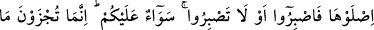
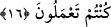

Âyette, haberin mübtedâdan önce getirilme sebebi, haberde mezkûr olan sihir
kelimesinin onların ikaz ekseni ve azara sebep olan nokta olmasını belirtmesi
açısındandır. Sanki şöyle denilmek istenmiştir: Siz, başınıza gelecek şeyleri haber veren
Kur’ân’a “sihir” diyordunuz ya, işte o Kur’ân’ın haber verdiği bu cehennem ateşine de
sihir desenize! Bakın bakalım, bu gördüğünüz sihir midir?
Bu istifham, onların, vahiyle (Kur’an’la) ilgili olarak “Bu sihirdir” sözlerine karşılık
olarak gelmiştir. “Misdak”, bir şeyi kanıtlayan delildir. Âhiret ahvâli ve orada görülen
şeyler de peygamberlerin haber verdikleri şeyleri tasdik eder. Yâni: “Gördüğünüz
cehennem azabı haktır” denilmek istenmiştir.
Yoksa siz mi, verilen bu haberde olduğu gibi, kendisinden haber verilen şey
husûsunda körsünüz? Yahut “Herhalde gözlerimiz döndürüldü, biz büyülenmiş bir
topluluğuz.” (el-Hicr 15/15) şeklindeki iddiânız sebebiyle dünyada gözünüz bağlandığı
gibi burada da gözlerinizin görmesine engel mi olundu?
16. “Girin oraya, sabretseniz de sabretmeseniz de artık sizin için birdir. Siz
ancak yaptıklarınıza göre cezâlandırılacaksınız.”
Ona/cehenneme girip sıcaklığına ve zorluklarına dayanın bakalım! İster dayanın ister
dayanmayın. Dilediğinizde sabır gösterin veya göstermeyin aynıdır. Zira hiçbir şekilde
sizin ondan kurtuluşunuz yoktur. Bu âyet-i kerîme onların ümidlerini kesmek için
getirilmiştir.
“Sizin için birdir.” “Sevâun” ile başlayan cümle mahzuf bir mübtedanın haberidir ve
buranın mânâsı şöyledir: Her iki durumda yâni sızlansanız da sabretseniz de azabın
kaldırılması veya hafifletilmesi gibi herhangi bir faydayı asla temin edemezsiniz. Çünkü
sabır ancak dünyada bir fayda karşılığında olur, âhirette olmaz. Her kim bu dünyada
tâatlere sabırla devam ederse âhirette sızlanmaz. Her ne kadar sabır soğan kadar acı ise
de akibeti bal kadar tatlıdır.
“Siz ancak yaptıklarınıza göre cezâlandırılacaksınız” cümlesi “sevâun/eşittir”
ifâdesinin sebep cümlesidir. Zira cezâ, onların inkâr ve çirkin amelleri karşılığında
verilmektedir. Bu, kesinlikle vuku bulacak ilâhî bir vaaddir. Allah’ın vaadinin yalan
çıkması da mümkün değildir. Ayrıca faydası bulunmaması açısından da sabretmeleri
veya etmemeleri müsâvîdir.
et-Te’vîlâtü’n-Necmiyye’de de âyetin bu son cümlesi şöyle takdîr edilmektedir: “Siz
ancak dünyadaki hayır ve şer amelinizden dolayı cezâlandırılacaksınız. Yoksa âhiretteki
sabır, inkiyâd, huşû, tazarru ve duâlarınızla değil. Zira onların hiçbir faydası
olmayacaktır. Netice olarak onlara: “Sinin orada, benimle konuşmayın” (el-